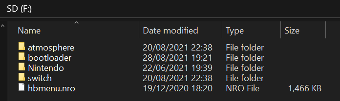

Préparation de la carte SD
Nous allons maintenant placer les fichiers requis pour le CFW Atmosphère et quelques fichiers homebrew supplémentaires sur la carte SD.
Atmosphère possède son propre bootloader (payload), appelé fusée (primary). Pour les besoins de ce guide, nous utiliserons Hekate à la place, afin que nous puissions récupérer la NAND (stockage interne) du système et profiter d’autres fonctionnalités avancées à l’avenir.
Extensions de noms de fichiers
Si vous utilisez Windows, vous devriez activer l'affichage des extensions de noms de fichiers avant de continuer. Cf. ce guide.
Ce dont vous avez besoin
- La dernière version de Hekate (Téléchargez
hekate_ctcaer_(version).zipdans les assets) - Le fichier de configuration Hekate : hekate_ipl.ini
- La configuration de redirection DNS (90dns) : emummc.txt
- Le dossier bootlogo.zip : bootlogos.zip
- La dernière version de Atmosphère (Téléchargez
atmosphere-(version)-master-(version)+hbl-(version)+hbmenu-(version).zipdans les assets). - La dernière version de Lockpick_RCM (Téléchargez
Lockpick_RCM.bindans les assets) - La dernière version de Checkpoint (Téléchargez
Checkpoint.nrodans les assets). Notez qu'il s'agit d'un correctif car la dernière version de la team FlagBrew ne fonctionne pas actuellement. - La dernière version de FTPD (Téléchargez
ftpd.nrodans les assets) - La dernière version de NXThemeInstaller (Téléchargez
NxThemesInstaller.nrodans les assets) - La dernière version de NX-Shell (Téléchargez
NX-Shell.nrodans les assets) - La dernière version de the hbappstore (Téléchargez
appstore.nrodans les assets)
Instructions
- Insérez la carte SD de votre Switch dans votre PC.
- Copiez le contenu du fichier
.zipAtmosphere à la racine de votre carte SD. - Copiez le dossier
bootloaderdu fichier.zipHekate à la racine de votre carte SD. - Copiez le dossier
bootloaderdu fichierbootlogos.zipà la racine de votre carte SD.- Si on vous demande de fusionner les dossiers, faites le.
- Copiez le fichier
hekate_ipl.inidans le dossierbootloadersur votre carte SD. - Copiez le fichier
Lockpick_RCM.bindans le dossier/bootloader/payloadssur votre carte SD. - Créez un dossier
hostsdans le dossieratmospheresur votre carte SD, et mettez le fichieremummc.txtà l'intérieur. - Créez un dossier
appstoredans le dossierswitchsur votre carte SD, et mettez le fichierappstore.nroà l'intérieur. - Copiez les fichiers
Checkpoint.nro,ftpd.nro,NX-Shell.nroetNxThemesInstaller.nrodans le dossierswitchsur votre carte SD. - Si vous utilisiez déjà votre carte microSD comme périphérique de stockage pour vos jeux et que vous avez conservé votre dossier
Nintendoavant de partitionner votre carte microSD, replacez le à la racine de votre carte microSD. - Réinsérez votre carte SD dans votre Switch.
Votre carte SD devrait ressembler à ça. Le dossier Nintendo n'est pas présent si vous n'avez jamais utilisé votre carte SD avec votre Switch.
